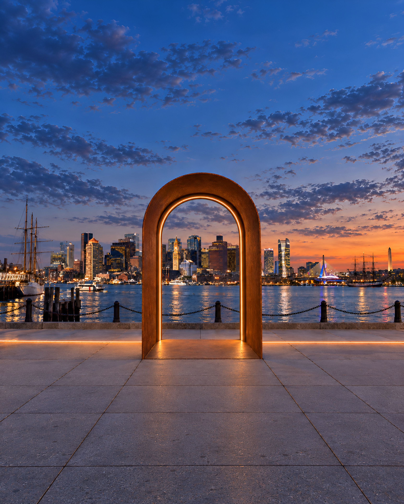
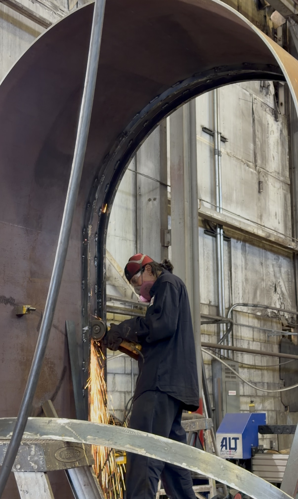

WELCOME TO
EAST BOSTON
LET US SHOW YOU AROUND.
The Golden Thread is a growing network of places weaving together East Boston’s story through history, innovation, and culture.

Who's Making All This?
Meet Project Starboard and the partners bringing the Golden Thread to life.
Meet the Makers
The future is ours to make.
Help weave the story
Support
The Golden Thread
East Boston